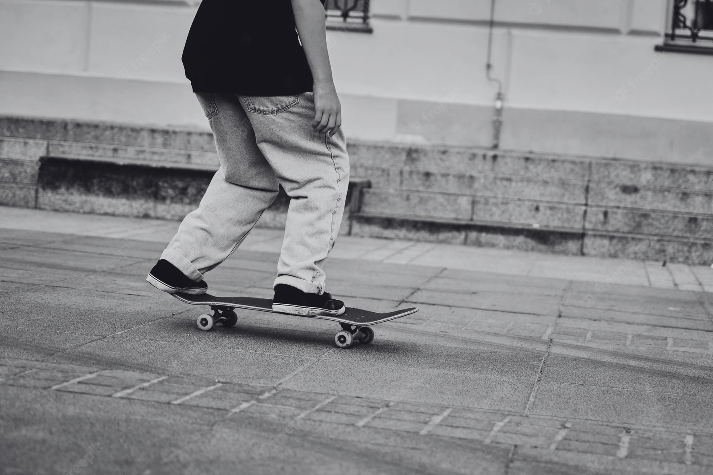
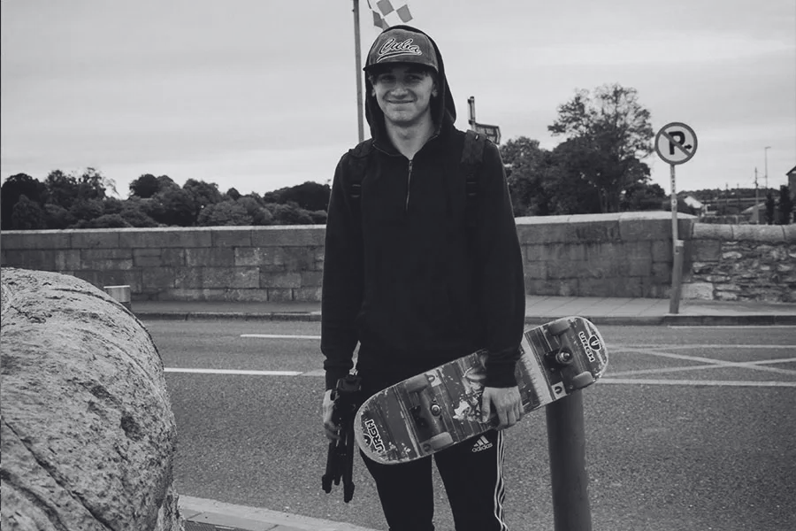

Gap com mureta da Voluntários
Luiza Sampaio
155 visualizacões
Rua Voluntários da Pátria is a street located in the neighborhood of Botafogo, in the South Zone of Rio de Janeiro. It is one of the busiest roads in Botafogo and has a wide variety of shops, company headquarters and the Botafogo Station of Metro Rio. The street also housed the first field of Botafogo de Futebol e Regatas, at Campo da Rua Voluntários da Pátria, which was later sold to the City of Rio de Janeiro.
The name of the street comes from the Volunteers of the Homeland, which was the name of the military units created on January 7, 1865, by the Empire of Brazil (1822-1889), to fight in the Paraguayan War (1864-1870); with which it was sought to reinforce the strength of the Brazilian Army's military forces.


The street also houses the Igreja Matriz de São João Batista da Lagoa, built in 1836 and considered the oldest church in the South Zone of Rio de Janeiro.